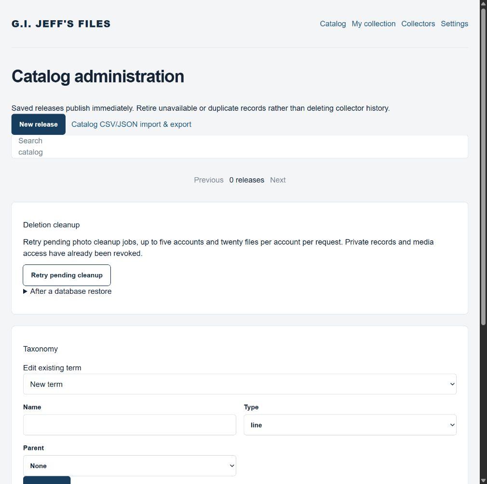

G.I. Jeff's Files: step 6
Migration plan · Reset evidence
Clean-start acceptance
Verified October 6, 2026. The published owner session works, administrator setup is complete, and production catalog and collection inventory remain empty. Authorization and domain fixtures ran in isolated SQLite/R2 tests; a separate localhost test exercised real local D1/R2 and removed its temporary record and photo. No test inventory was inserted into production and the reset was not repeated. Access remains owner-only; opening access is step 7.
Administrator configuration
The actual Site-authenticated ChatGPT identity persisted by the application was verified against the sole active owner session, its user and private collection. Its untruncated platform subject was configured as the secret ADMIN_CHATGPT_SUBJECT through Sites runtime configuration, revision 3. A Sites account ID or email was not substituted for that subject. Redeploying unchanged version 22 applied this configuration successfully; the subsequent authenticated request created exactly one administrator grant with source configured-sites-subject. The published Catalog administration screen now exposes New release, taxonomy and import/export controls. Neither the identity subject nor login email is included in this report.
Configuration deployment: appgdep_6ac530d85a4c8191ad0f17ed881613cb, succeeded at 17:33:20 UTC. The Site is appgprj_6ac1cede871881919ac1c3b25bf1a6c5; DB and BUCKET bindings are retained.
Production state
| Evidence | Result |
|---|---|
| Catalog releases, catalog parts, owned entries, media and legacy items | Zero rows in each, independently read through Sites D1 inspection. |
| Owner bootstrap | One active user/ChatGPT identity, one private collection, one administrator role. These are account configuration, not inventory. |
| Reset markers | Two expected operation guards retained. Step 5 verified removal of 18 legacy items and 344 R2 objects, followed by an empty R2 listing. This acceptance run created no production files. |
| Audience | One allowed owner, no groups or external viewers. No public sharing change. |
Validation results
| Check | Observed result and scope |
|---|---|
| Authorization and domain handlers | node scripts/check-step2.cjs passed. Cross-user private records/photos and admin mutations are denied; public views omit private fields; mutations enforce origin. Snow Job's two skis with zero figure, incomplete multipack parts, ownership unconfirmed, separate copies and Complete semantics passed. Complete means boxed with all parts; it does not imply a condition or sealed status. |
| Launch services | node scripts/check-step4.cjs passed: safe counts/profiles, taxonomy, CSV/JSON round trips and atomic staged imports, concurrent merge preservation, full JPEG decode/metadata stripping, deletion retry/recovery ledger and durable rate limits. |
| Photos | node scripts/check-photos.cjs passed ordering, cover and removal checks. |
| Actual local storage and HTTP | node scripts/check-local-launch.mjs http://127.0.0.1:5173/ passed local sign-in, staged import, normalized collection, real D1/R2 JPEG processing, private export, page rendering and fixture cleanup. Local fake sign-in is not a production identity test. |
| Published desktop UI | Actual signed-in owner sees empty catalog, Manage catalog, administrator controls, private profile settings and collection/catalog transfer templates. Search remains visible and Filters expand/collapse. New release dialog opened without saving; initial focus, Shift+Tab wrapping and Escape dismissal worked. |
| Responsive catalog | Edge local preview measured window.innerWidth = 390 and document scroll width 375, with filters collapsed and expanded. No horizontal overflow. The in-app browser viewport override did not change its measured width, so it is not counted as mobile evidence. Temporary overrides were reset. |
Development preview now excludes package/publishing caches, local storage and generated output from its file watcher, while preserving sandbox polling. This avoids watching another complete application checkout. It does not change production authentication or the data model.
Published administrator evidence
Captured after reloading version 23: administrator controls and zero releases.

Owner catalog setup
- Open Catalog administration using the configured owner sign-in.
- Create taxonomy terms for A Real American Hero and 25th Anniversary; add series, sub-series, waves and other metadata as needed.
- Create each identifiable release separately, including packaging/international variants; link related records rather than combining them. Enter images, original retail price, file-card image/text and parts with expected quantities. Multipack figures/vehicles and vehicle drivers are parts of that release.
- Save publishes immediately. CSV/JSON templates are available from Import & export; validate and preview before committing, with photo contents uploaded separately.
Catalog population is owner work after clean-start verification. AI-assisted catalog entry is outside this implementation scope.
Checks before opening public access
Step 6's clean-state, administrator and isolated authorization/domain checks are complete. These remaining broader release gates do not justify claiming public launch readiness:
- Exercise populated collection and catalog workflows on a physical phone, including camera permission/capture, condition tooltips, dialog scrolling and zoom/reflow. The measured empty-catalog responsive check does not establish every mobile workflow.
- Confirm production image processing CPU/memory limits with representative images and record provider storage/cost limits. Isolated/local JPEG checks do not prove production capacity.
- Confirm platform backup retention and an actual supported restore procedure, including R2 media and reapplication of the deletion ledger after D1 restore. Simulated recovery tests do not establish provider backup guarantees.
- After owner catalog setup, verify intended anonymous catalog and second-collector access using the supported public sign-in configuration when step 7 is authorized. Current owner-only Site access prevents an end-to-end second-user production test; isolation is presently verified through handler fixtures.
Discussions remain the next product phase. Additional identity providers, identification and expanded valuation follow their planned phases; commerce remains deferred.
Source and publication
Published version 23, saved ID appgprj_6ac1cede871881919ac1c3b25bf1a6c5~appgver_77589a34dd988191be85253d3a64e92e, source d3eaa7b1a801e83b6c464733998f9b363a91b0f6. Deployment appgdep_6ac538136c3c8191819c1725d3f12fb6 succeeded at 18:04:16 UTC on October 6, 2026, using runtime revision 3. Archive SHA-256 8a869c28e8f334ee080d243d1bbc2a645d866c29c5fb521c04a9f4d9dc0d42aa, 130 files, 2,283,520 bytes. Production build, TypeScript and whitespace checks passed; audience remains owner-only.
The canonical GitHub repository retains its own history and planning HTML; the dedicated Sites checkout retains Sites source history. Local repository commits are not a claim that the GitHub branch has been pushed.